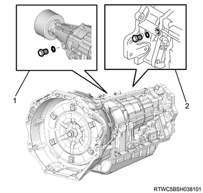
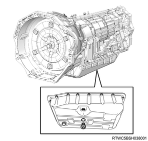
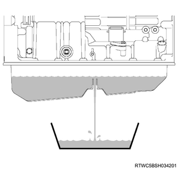
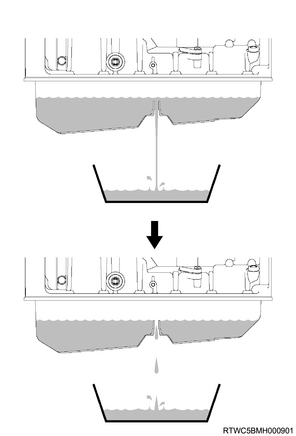
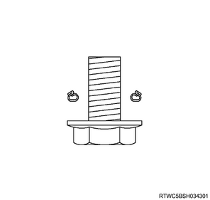
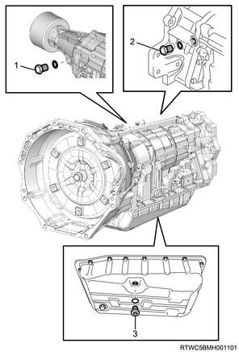

Caution
Specified ATF
EXXON MOBIL ATF-3309 or equivalent
Caution
Rotational speed： 700 r/min
Note
Caution
Note
Park the vehicle on a level place, move the select lever in P range and apply the parking brake firmly.
Put blocks at the front and rear of the tire.
Caution
Remove the filler plug with O-ring.
| O-ring | |
| Inner diameter | Thickness |
| ： 15.41 mm { 0.61 in } | ： 2.20 mm { 0.09 in } |

Replenish the ATF.
： about 0.5 L { about 0.13 US gal / about 0.11 Imp.gal } Replenishing amount
Caution
| Fluid capacity [Reference value] | |||
| Engine | Specification | Oil pan type | ATF |
| 4JJ1 | High ride | Deep | ： 10.55 to 10.85 L { 2.79 to 2.87 US gal / 2.32 to 2.39 Imp.gal } |
| 4JK1 | High ride | Deep | ： 10.05 to 10.35 L { 2.65 to 2.73 US gal / 2.21 to 2.28 Imp.gal } |
Note
Temporally tighten the filler plug with O-ring.
Connect a jumper between the terminals No.12 and No.4 (or No.5) of the DLC to short the TCM.
Note
Start the engine.
Move the select lever through each gear range, pausing for more than 2 seconds in each range to fill the hydraulic circuit. Repeat the same manner 2 times, and then move the select lever in P range.
Activate the oil level adjustment control to change the lighting temperature of the automatic transmission fluid warning light.
Move the select lever back and forth between N range and D range within 1.5 seconds. Repeat it for at least 6 seconds until the automatic transmission fluid warning light turns ON in N range.
When the oil level adjustment control is activated, the automatic transmission fluid warning light will be illuminated for 2 seconds in N range. Keep the select lever in N range.
Caution
After activating the oil level adjustment control, the automatic transmission fluid warning light will operate according to the ATF temperature condition.
Note
| 4JJ1 | |
| Turn OFF | ： 44 ℃ or less { 111 °F or less } |
| Turn ON | ： 45 to 53 ℃ { 113 to 127 °F } |
| Flashing | ： 54 ℃ or more { 129 °F or more } |
| 4JK1 | |
| Turn OFF | ： 45 ℃ or less { 113 °F or less } |
| Turn ON | ： 46 to 51 ℃ { 115 to 124 °F } |
| Flashing | ： 52 ℃ or more { 126 °F or more } |
Caution
Perform the temperature up until the automatic transmission fluid warning light turns ON so that the ATF temperature reaches the oil level adjustment temperature.
Note
After the automatic transmission fluid warning light turns ON, keep the select lever in N range with the engine at idle. Verify that the automatic transmission fluid warning light stays ON for at least 1 minute.
Rotational speed： 700 r/min
Note
Caution
Remove the overflow plug and verify that the ATF overflow through the overflow hole.
| Gasket (Overflow plug) | |
| Inner diameter | Thickness |
| ： 11.90 mm { 0.47 in } | ： 2.00 mm { 0.08 in } |


If the ATF overflow
Wait until the overflow becomes to a trickle with illuminating the automatic transmission fluid warning light.

If the ATF does not overflow
Fill the ATF through the filler hole until the ATF overflow with illuminating the automatic transmission fluid warning light, and then wait until the overflow becomes to a trickle.
Caution
Using new gasket, tighten the overflow plug to the specified torque.
Tightening torque： 20 N・m { 2.0 kgf・m / 15 lb・ft }
Coat a new O-ring with ATF, and install it to the filler plug.
Tighten the filler plug to the specified torque.
Tightening torque： 40 N・m { 4.1 kgf・m / 30 lb・ft }
Caution


Move the select lever in P range and stop the engine.
Remove the jumper from DLC to cancel the short circuit and restart the engine.
Verify that the automatic transmission fluid warning light and check trans warning light turn OFF, and then stop the engine.
Caution
Note
Inspect the ATF condition no mixing of metal particles and disc lining powder too much, smell burnt, black and no white colored contamination.
Inside A/T failure
If a problem is found, replace A/T or Torque converter.
Especially white-colored contamination is caused by mixing of water.
Therefore inspect damage or brake of oil cooler system.